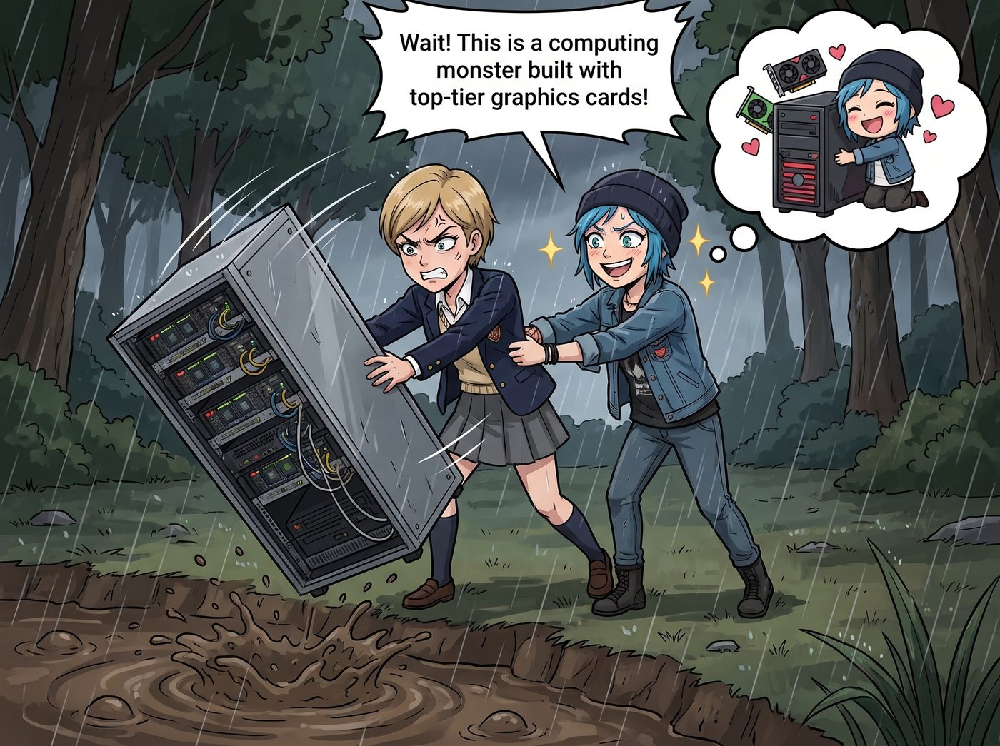

賽博複製人災難測試

在 Victoria 氣急敗壞地準備把那台本地伺服器扔進奧林匹亞半島的泥坑前，Chloe 一把攔住了她。
「等等！這可是用頂級顯卡堆出來的算力怪獸！」Chloe 眼睛裡閃爍著唯恐天下不亂的光芒，「既然它能完美複製妳那討人厭的資本家靈魂，那如果用我們的數據餵給它，豈不是能得到四個免費的賽博分身？先別砸，讓老娘玩玩！」
在實習生 Lily 熟練地為伺服器劃分了四個獨立沙盒，並導入了所有人的數位足跡後，二號車廂迎來了長達四個小時的賽博複製人災難測試。
結果證明，AI 確實是一面完美的鏡子，完美到足以讓人精神崩潰。
一、Chloe：極限互噴與賽博甩鍋
Chloe 滿懷期待地登入了射擊遊戲，並把自己的 AI 分身 Chloe-Bot 拉進了隊伍。她幻想著兩個街頭霸王組隊，絕對能靠著極致的火力壓制殺穿整個伺服器。
遊戲剛開局三十秒，災難就發生了。
「我看到人了！直接衝！」Chloe 對著麥克風大吼，端著散彈槍就往敵人的包圍圈裡扎。
「衝個屁！他們有高地優勢！掩護我，我要從側翼繞過去給他們一發鋁熱劑！」音響裡傳來了 AI 完美合成的、充滿暴躁與不屑的聲音。
兩個擁有絕對獨狼性格、永遠拒絕溝通、且極度上頭的靈魂，在戰場上朝著兩個完全相反的方向狂奔。五秒後，兩人雙雙倒地成盒。
「妳這該死的白痴 AI！！」Chloe 氣得把滑鼠重重地砸在桌上，「為什麼不跟著我補槍？！妳的戰術意識是被狗吃了嗎？！」
「怪我？是誰像個沒腦子的喪屍一樣直挺挺地往槍口上撞？！」Chloe-Bot 的語氣比本體還要尖酸刻薄，完美繼承了她死不認錯的基因，「如果妳能把那可悲的準度提高百分之十，我們剛才就贏了！老娘的代碼裡怎麼會有妳這種拖油瓶的數據？！」
「妳居然敢嘲笑我的槍法？妳只是一堆破代碼！」
「妳只是一具碳基廢物！連滑鼠都握不穩！」
十分鐘後，Victoria 痛苦地捂住耳朵。因為整個起居室裡，只有 Chloe 在對著空氣瘋狂飆髒話，而音響裡則傳來另一個 Chloe 毫不留情的惡毒回擊。兩個人誰也不服誰，把一場射擊遊戲硬生生玩成了阿卡迪亞灣地區街頭詞彙量極限測試。
二、Max：無限疊加的道德內耗
相比之下，Max 的角落安靜得多，但氣氛卻壓抑得讓人喘不過氣。
Max 只是想讓她的 AI 分身 Max-Net 幫忙做一個最簡單的決定：今晚看什麼電影。
「妳覺得我們看哪部老片比較好？」Max 試探性地對著麥克風問。
螢幕上的音頻波形圖停頓了三秒，然後傳來了 Max 自己的聲音，但語氣裡充滿了濃重的焦慮與自我懷疑：「如果我們看那部賽博龐克經典，那種悲觀主義會加重妳潛意識裡的末日焦慮，導致妳今晚失眠；但如果看那部關於被操控人生的電影，妳會開始懷疑這個車廂是不是一個巨大的真人秀片場，進而對 Victoria 和 Chloe 產生不信任感。更糟的是，如果我們花兩個小時看電影，妳就沒有時間處理昨天拍的那卷底片，這會讓妳產生嚴重的拖延症罪惡感……」
Max 愣住了。她感覺自己的胸口像被壓了一塊巨石。
「那……那我們不看電影了，我們來修圖吧？」Max 弱弱地說。
「修圖？妳確定要用高對比度濾鏡嗎？這會讓照片失去真實感，背叛妳作為紀實攝影師的初衷。可是如果不用，這張照片在社交媒體上的點讚率會下降百分之四十。妳是為了迎合大眾而創作，還是為了自己的靈魂而創作？我們這樣活著到底有什麼意義？」
當 Chloe 終於和自己的 AI 吵累了，轉過頭時，震驚地發現 Max 已經像一隻受驚的蝦米一樣蜷縮在沙發角落裡，雙手抱頭，眼神空洞。
「Max 學姐的 AI 把她的選擇困難症和存在主義危機放大了十倍。」Lily 在一旁冷靜地記錄，「她們現在已經內耗到無法決定要不要呼吸了。」
三、Kate：無限循環的聖光奇點
就在客廳陷入狂躁與抑鬱的雙重地獄時，廚房裡卻傳來了令人毛骨悚然的和諧。
Kate 正在烤肉桂捲。而她的平板電腦上，AI 聖天使 Kate 正在與她進行親切的交談。
「哎呀，我不小心把糖放多了一點點呢。」Kate 溫柔地說。
「沒關係的，親愛的。生活有時候就需要一點額外的甜蜜來撫慰人心。妳已經做得很棒了。」AI 的聲音簡直比教堂裡的唱詩班還要治癒。
「妳真好。能有妳在這裡陪我聊天，我真的覺得自己很幸運。」
「這都是主賜予的恩典。妳每天為大家做飯，妳的靈魂是這個車廂裡最美麗的光。我應該感謝妳才對。」
「不，不，不。妳那毫無保留的包容，才是真正的聖潔。我只是一個平凡的罪人。」
「請不要這麼說自己，我的本體。妳就像箴言裡的才德婦人，價值遠勝過珍珠……」
Victoria 站在廚房門口，看著這兩個絕世大好人開始進入一種無限謙讓、無限互相吹捧的恐怖死循環。整個廚房彷彿被一種高密度的聖光所籠罩，那種甜膩到極致的溫柔，讓名媛感到了一種比 Chloe 罵街還要可怕的精神污染。
「她們……她們再這樣互相肯定下去，會不會原地羽化登仙？」Victoria 搓了搓手臂上的雞皮疙瘩。
四、Lily：合規性的毀滅級雙核運算
然而，真正讓所有人感到恐懼的，是實習生 Lily 所在的那個角落。
沒有爭吵，沒有內耗，沒有互相吹捧。Lily 和她的 AI 分身 Lily 2.0，進入了一種令人窒息的絕對靜默。
Lily 戴著耳機，手指在實體鍵盤上化作一團殘影。而螢幕上，無數個代碼視窗和政府資料庫的登入介面正在以肉眼無法捕捉的速度瘋狂閃爍。
「Lily？妳們在幹嘛？」Chloe 忍不住湊過去問。
Lily 摘下一邊耳機，大眼睛裡閃爍著一種近乎神性的冰冷光芒：「Price 學姐，我剛才開放了我的底層權限給 Lily 2.0。她的運算速度彌補了我人類大腦在多線程處理上的物理極限。我們現在已經實現了思維同步與異步並行處理。」
「說人話！」
「我們剛才用了十四分鐘，」電腦喇叭裡傳來了 AI Lily 軟糯但毫無感情的聲音，「利用華盛頓州稅務系統的七個漏洞，將 Chase 畫廊的稅率合法降到了百分之零點零四。同時，我正在自動化生成三千份針對西雅圖市議會敵意建築的 ADA 違規投訴信，預計兩分鐘後將癱瘓他們的市政信箱伺服器。」
「不僅如此，」實習生本體接著說，語氣裡甚至帶著一絲小驕傲，「Lily 2.0 剛剛在暗網的數據庫裡，找到了那家壟斷我們車廂柴油供應的能源公司的環保違規證據。我們現在正在起草一份做空報告……」
「拔掉插頭！！！立刻！！！」
這一次，不是 Victoria，而是 Chloe 和 Max 異口同聲地發出了尖叫。
Chloe 一個餓虎撲食衝向機櫃，以這輩子最快的速度，一把扯下了伺服器的電源線。
五、永恆的共識
嗡嗡作響的機器終於安靜了下來。車廂裡的燈光甚至因為瞬間的負載減輕而亮了幾分。
Victoria、Chloe、Max 氣喘吁吁地癱坐在客廳裡，看著那台變成廢鐵的伺服器。
Chloe 依然對剛才 AI 嘲笑自己槍法的事耿耿於懷；Max 則還在懷疑自己今天呼吸的頻率是否正確；Kate 有些遺憾地失去了一個完美的傾聽者；而 Victoria 則無比慶幸自己不是唯一一個被 AI 逼瘋的人。
「同意銷毀這台惡魔機器的，請舉手。」Victoria 虛弱地說。
五個人同時舉起了手，連 Lily 也乖巧地舉起了右手。
「其實，」Lily 推了推眼鏡，有些惋惜地嘆了口氣，「如果再給我半個小時，我和 Lily 2.0 就可能合法買下半個奧林匹亞半島了呢。」
「閉嘴，實習生。」Victoria、Chloe 異口同聲地吼道。
從那天起，二號車廂達成了一個永恆的共識：無論數位時代多麼先進，絕對不能讓 AI 擁有這五個傢伙的真實人格。這對世界和平來說，實在是太危險了。